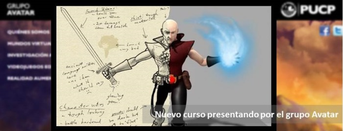

En esta fase se identifican las tareas necesarias para la ejecución del videojuego y se reparten entre los distintos componentes del equipo desarrollador. También se fijan plazos para la ejecución de dichas tareas y reuniones clave, con la ayuda de herramientas de diagramación de actividades como GANTT y PERT.
|  |